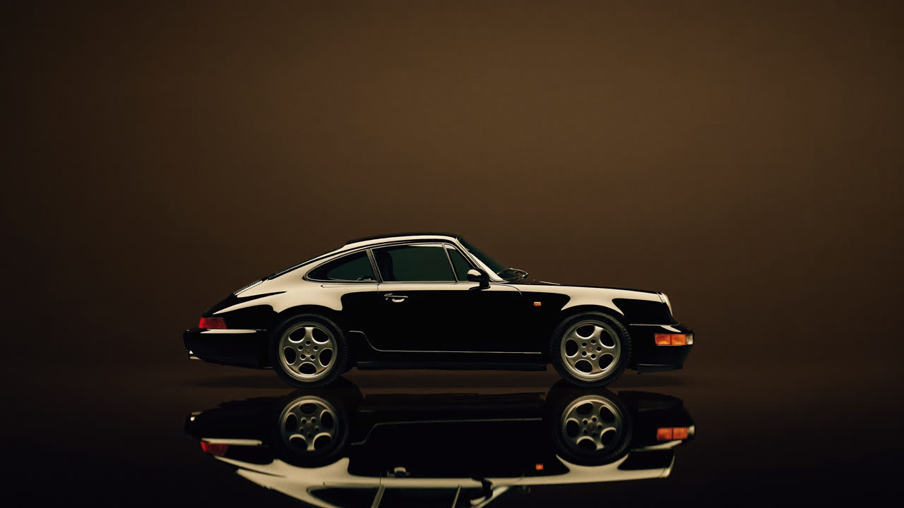
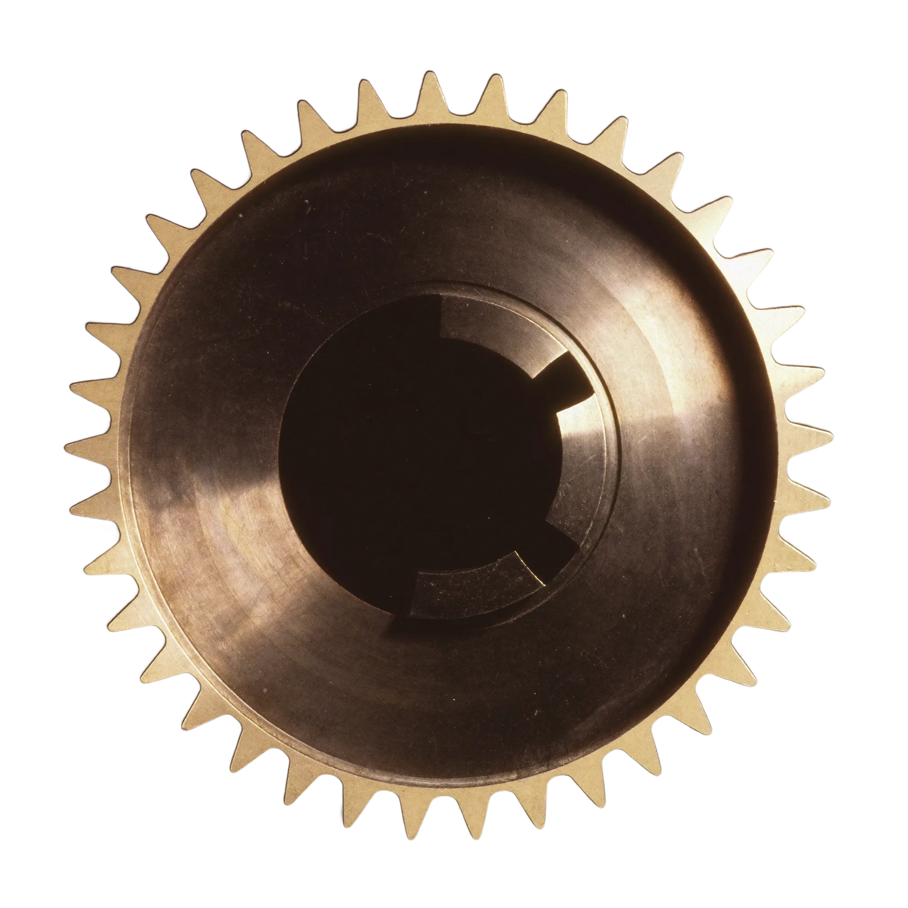

Case study · client site · 2026
Loco Exotics
Loudoun County Exotics fixes Ferraris, Porsches and Lamborghinis in Sterling, Virginia. The site had to feel the way the cars do, so I built it as a short film you scroll through.
Not a body shop. An atelier.
the brief
Most repair shop sites sell on a price list and a stock photo of a spanner. This shop works on machines that punish shortcuts, for owners who notice everything.
So the goal was a feeling, before a single word gets read: these people are obsessive, in the best way. Everything on the site serves that one story.
Told in five scenes
the storyboard

The scroll is the playhead
try it below
Nothing on the site just autoplays at you. Each film is scrubbed by the scroll, so the visitor directs the pace: scroll slowly and the brake disc turns slowly, flick and it spins.
Scenes hand over to each other through a tunnel transition instead of a hard cut, so the page reads as one continuous take. That transition took four attempts to get right, and it was worth every one.
Stills before motion
the golden rule
Every shot was generated with AI, and I directed it like a shoot. Each scene started as a still: composed, approved, and only then animated from that exact frame, so no credits were spent on a film nobody wanted.
The text was planned before the picture. Headline space, light sources out of frame, cars low in the shot, blank brake calipers. You cannot style your way out of a frame with gibberish baked into it; the fix is always to shoot it again.
Film, not a website
the nerdy bit
Scrubbing video on scroll usually stutters. I re-encoded every clip with a keyframe every four frames, eased the playhead toward the scroll instead of jumping, and never asked for a new frame while the last one was still loading. Add momentum scrolling and it glides like a film.
Under the hood it is one HTML file, two stylesheets and one script. No framework, fast on a phone, and it even works offline.
Then it gets out of the way
the useful part
After the story come the things a customer actually needs: services by marque, reviews, hours and directions, and a booking form that promises a call back within one business day.
Big feelings up top, easy answers below.
People don’t remember a spec sheet. They remember how the site made them feel about their car.visual storytelling